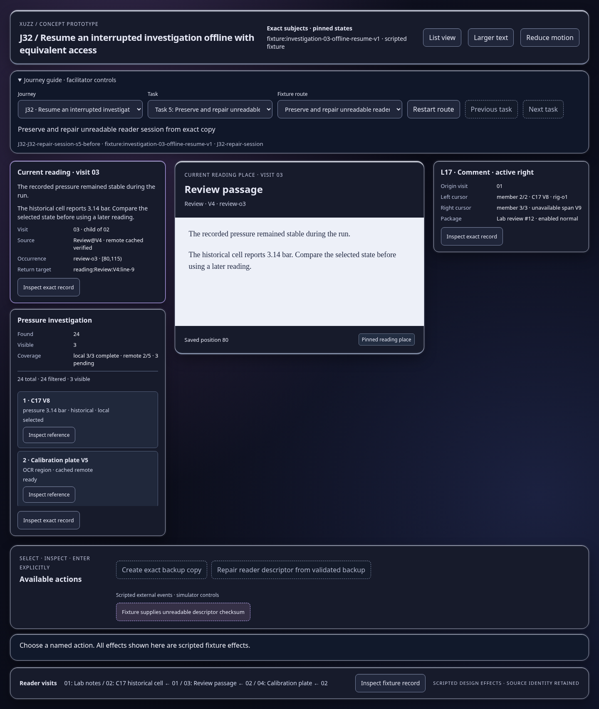
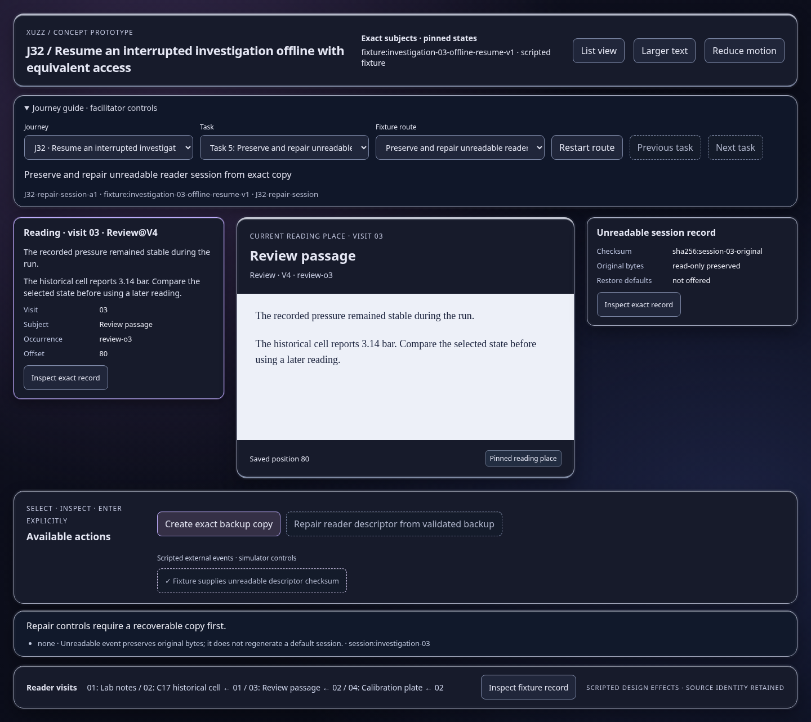
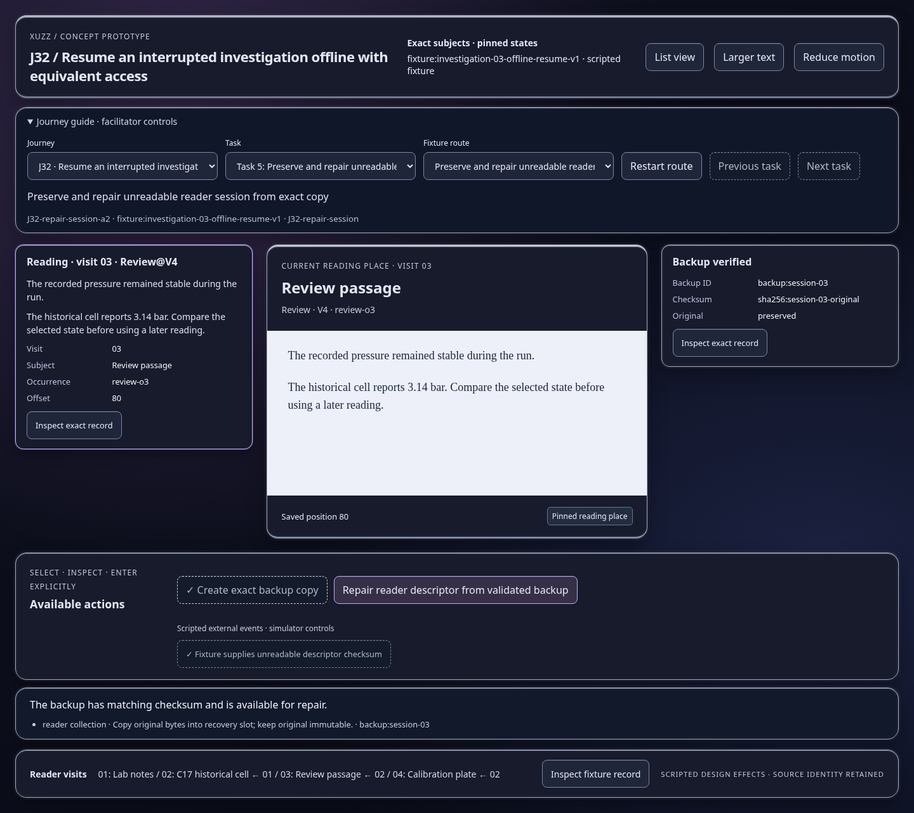
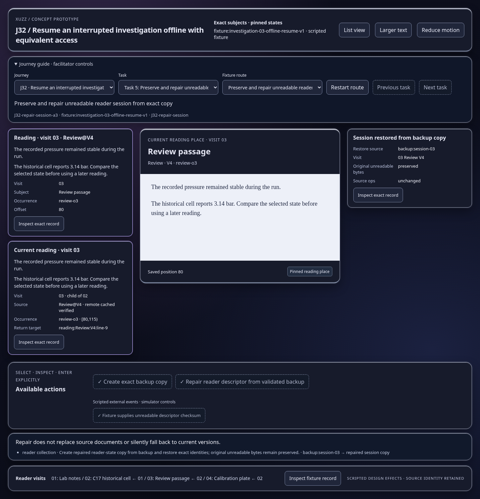

Scripted concept states; inspect the effect and identity trace. Images show actual prototype rendering.

Repair controls require a recoverable copy first.
Open this represented state
The backup has matching checksum and is available for repair.
Open this represented state
Repair does not replace source documents or silently fall back to current versions.
Open this represented state